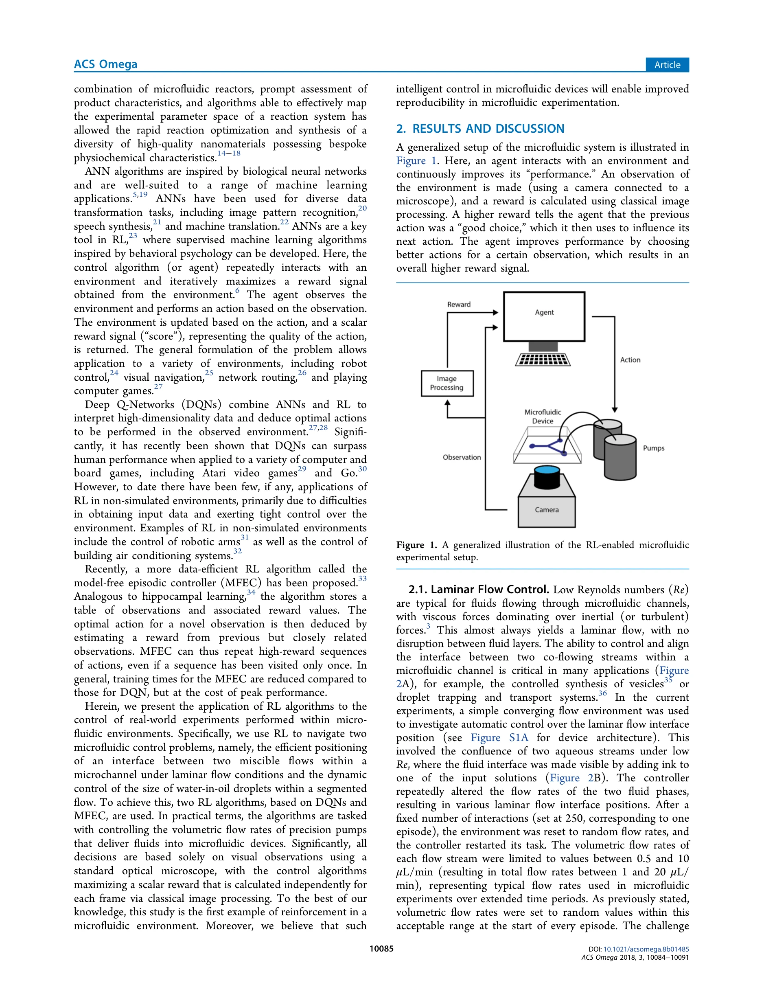

저자: Oliver J. Dressler, Philip D. Howes, Jaebum Choo, Andrew J. deMello | 날짜: 2018-08-31 | DOI: 10.1021/acsomega.8b01485

Figure 1. A generalized illustration of the RL-enabled microfluidic
마이크로플루이딕 시스템의 동적 제어를 위해 Deep Q-Networks와 model-free episodic controller 기반의 reinforcement learning 알고리즘을 적용하여, 실제 실험 환경에서 laminar flow interface 위치 제어와 droplet 크기 제어를 자동화했다.
총평: 마이크로플루이딕 분야에서 reinforcement learning을 처음 실제 실험에 적용한 선구적 연구로, DQN과 MFEC을 비교하며 실시간 비전 기반 자동 제어의 가능성을 명확히 입증했다. 마이크로플루이딕 실험의 자동화와 신뢰성 향상이라는 실질적 문제를 해결하는 중요한 기여이나, 범용성과 장시간 안정성에 대한 추가 검증이 필요하다.